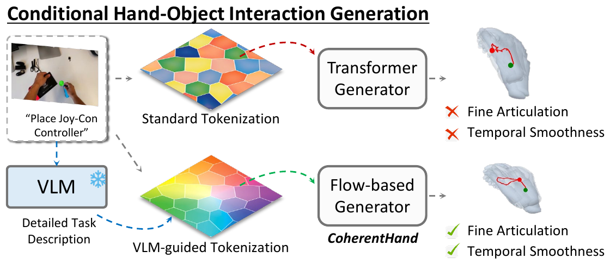
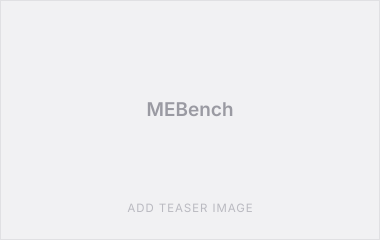
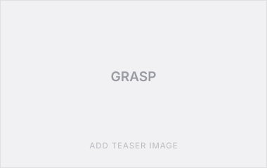
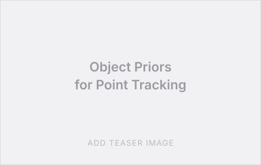
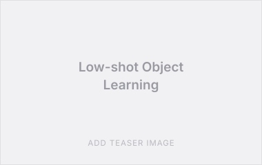

2025 – present
PhD in Computer Science
University of Illinois Urbana-Champaign · advised by James M. Rehg
PhD Student, University of Illinois Urbana-Champaign
I am a PhD student in Computer Science at the University of Illinois Urbana-Champaign, advised by James M. Rehg.
My research is in egocentric and human-centric computer vision. I work on generative models of 3D hand motion and hand–object interaction, on tracking and representation learning from first-person video, and on understanding multi-person social interaction from multimodal signals.


MEBench: A Novel Benchmark for Understanding Mutual Exclusivity Bias in Vision-Language Models
CVPR, 2026

GRASP: Learning to Ground Social Reasoning in Multi-Person Non-Verbal Interactions
arXiv preprint, 2026

Leveraging Object Priors for Point Tracking
ECCV, 2024
Modeling Multimodal Social Interactions: New Challenges and Baselines with Densely Aligned Representations
CVPR, 2024

Low-shot Object Learning with Mutual Exclusivity Bias
NeurIPS, 2023
Early Prediction of Children's Disengagement in a Tablet Tutor Using Visual Features
AIED, 2021
Early Prediction of Children's Task Completion in a Tablet Tutor Using Visual Features
AAAI, 2021 (student abstract)
More papers on Google Scholar.